Tous les musées référencés.
Explorez les 126 fiches du catalogue par musée, ville ou thème, avec les informations de visite et les précautions utiles.
Essayez un autre nom, un territoire ou un thème plus large. Vous pouvez aussi retrouver toutes les fiches.
Les musées du catalogue
- Normandie
Abbaye de Graville – Musée du Prieuré de Graville
Consulter la fiche du musée →

L’abbaye de Graville au Havre.Photo : Philippe Alès · Wikimedia Commons · CC BY-SA 3.0 · Redimensionnée, sans recadrage. - Normandie
Airborne Museum
Consulter la fiche du musée →

Une scène reconstituée à l’Airborne Museum de Sainte-Mère-Église, photographiée en 2017.Photo : Avi1111 dr. avishai teicher · Wikimedia Commons · CC BY-SA 4.0 · Redimensionnée, sans recadrage. - Normandie
Batterie d'Azeville
Consulter la fiche du musée →

Une casemate de la batterie d’Azeville, photographiée en 2010.Photo : DennisPeeters · Wikimedia Commons · Domaine public · Redimensionnée, sans recadrage. - Normandie
Batterie de Crisbecq
Consulter la fiche du musée →

Un emplacement de canon de la batterie de Crisbecq, photographié en 2017.Photo : Falcon® Photography from France, France · Wikimedia Commons · CC BY-SA 2.0 · Redimensionnée, sans recadrage. - Normandie
Blackwater Museum 39/45 Berjou
Consulter la fiche du musée →

Le Blackwater Museum à Berjou et des objets présentés en extérieur, photographiés en 2026.Photo : Dave osm · Wikimedia Commons · CC BY-SA 4.0 · Redimensionnée, sans recadrage. - Normandie
Château de Crèvecœur – Musée Schlumberger
Consulter la fiche du musée →

Le château de Crèvecœur-en-Auge, photographié en 2012.Photo : Philippe Alès · Wikimedia Commons · CC BY-SA 3.0 · Redimensionnée, sans recadrage. - Normandie
Château-musée de Dieppe
Consulter la fiche du musée →
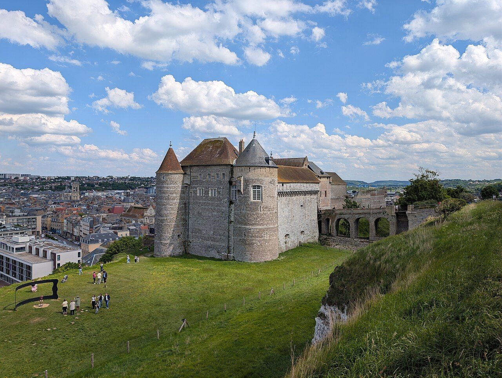
Le château qui abrite le musée de Dieppe.Photo : Andy Li · Wikimedia Commons · CC0 · Redimensionnée, sans recadrage. - Normandie
Château-Musée de Saint-Germain-de-Livet
Consulter la fiche du musée →

Le château de Saint-Germain-de-Livet.Photo : Zairon · Wikimedia Commons · CC BY-SA 4.0 · Redimensionnée, sans recadrage. - Hauts-de-France
Cité internationale de la langue française
Consulter la fiche du musée →

Le château de Villers-Cotterêts, siège de la Cité internationale de la langue française, photographié en 2023.Photo : Victorio98 · Wikimedia Commons · CC BY-SA 4.0 · Redimensionnée, sans recadrage. - Normandie
Espace muséal de la Poterie du Mesnil de Bavent
Consulter la fiche du musée →

Le manoir de la Poterie du Mesnil de Bavent, photographié en 2016.Photo : Emg63 · Wikimedia Commons · CC BY-SA 4.0 · Redimensionnée, sans recadrage. - Normandie
Espace-musée Charles Léandre
Consulter la fiche du musée →
- Hauts-de-France
Familistère de Guise
Consulter la fiche du musée →

Le théâtre du Familistère de Guise, photographié en 2015.Photo : Fab5669 · Wikimedia Commons · CC BY-SA 4.0 · Redimensionnée, sans recadrage. - Normandie
Ferme-musée du Cotentin
Consulter la fiche du musée →

Une machine à écrémer le lait photographiée à la Ferme-musée du Cotentin en 2009.Photo : Crochet.david · Wikimedia Commons · CC BY-SA 4.0 · Redimensionnée, sans recadrage. - Île-de-France
Fondation Louis Vuitton
Consulter la fiche du musée →
- Hauts-de-France
Historial de la Grande Guerre — Péronne
Consulter la fiche du musée →

Le château de Péronne, entrée de l’Historial de la Grande Guerre, photographié en 2017.Photo : Rolf Kranz · Wikimedia Commons · CC BY-SA 4.0 · Redimensionnée, sans recadrage. - Hauts-de-France
La Piscine – Musée d'art et d'industrie André Diligent
Consulter la fiche du musée →
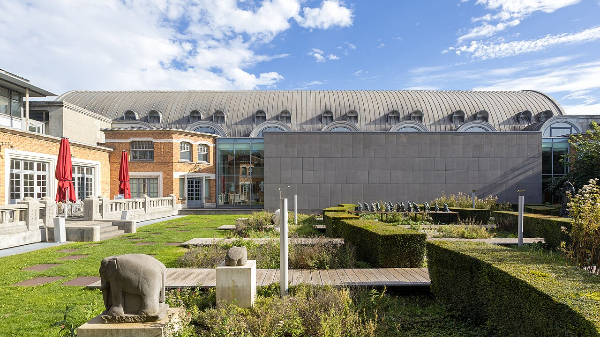
Le jardin intérieur du musée La Piscine à Roubaix, photographié en octobre 2026.Photo : JackyM59 · Wikimedia Commons · CC BY-SA 4.0 · Redimensionnée, sans recadrage. - Normandie
La Villa du Temps retrouvé
Consulter la fiche du musée →

La Villa du Temps retrouvé, à Cabourg.Photo : Gzen92 · Wikimedia Commons · CC BY-SA 4.0 · Redimensionnée, sans recadrage. - Normandie
La visite des ateliers BOHIN – Manufacture Bohin
Consulter la fiche du musée →
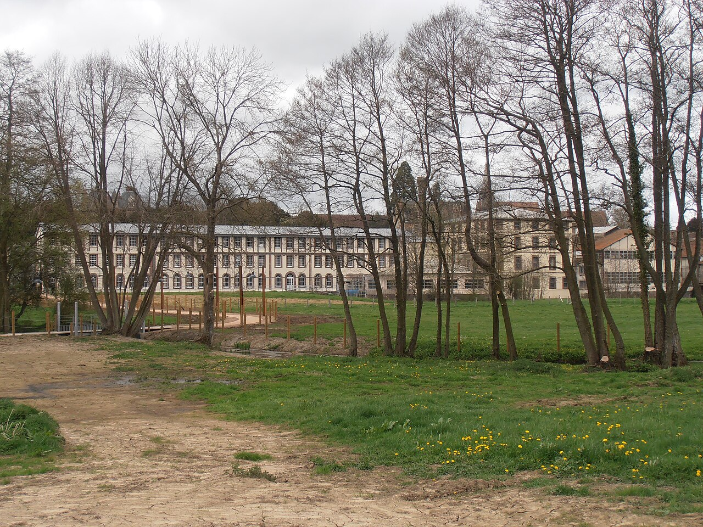
Vue de la manufacture Bohin à Saint-Sulpice-sur-Risle, en 2014.Photo : René Dinkel · Wikimedia Commons · CC BY-SA 3.0 · Redimensionnée, sans recadrage. - Normandie
Le Monde Miniature - Clécy
Consulter la fiche du musée →
- Normandie
Le Tourp, Maison de la Hague
Consulter la fiche du musée →
- Normandie
Les Dominicaines, centre d'art et artothèque
Consulter la fiche du musée →

Le bâtiment des Dominicaines à Pont-l’Évêque, photographié en 2010.Photo : Philippe Alès · Wikimedia Commons · CC BY-SA 3.0 · Redimensionnée, sans recadrage. - Normandie
Les Pêcheries, musée de Fécamp
Consulter la fiche du musée →

Le musée Les Pêcheries sur le port de Fécamp.Photo : Helmut Seger · Wikimedia Commons · CC BY-SA 4.0 · Redimensionnée, sans recadrage. - Hauts-de-France
Louvre-Lens
Consulter la fiche du musée →

Le Louvre-Lens et son parc, photographiés en mai 2026.Photo : JackyM59 · Wikimedia Commons · CC BY-SA 3.0 · Redimensionnée, sans recadrage. - Normandie
Maison du Lin
Consulter la fiche du musée →
- Normandie
Maison du Patrimoine Sourdin
Consulter la fiche du musée →
- Normandie
Maison natale Jean-François Millet
Consulter la fiche du musée →
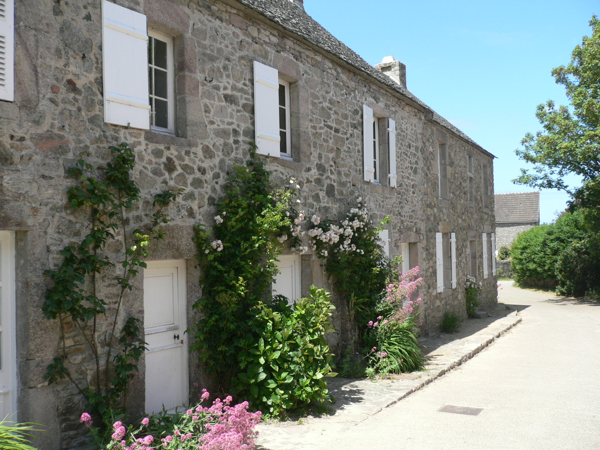
La maison natale de Jean-François Millet à Gruchy (vue ancienne).Photo : DSMD · Wikimedia Commons · Domaine public · Redimensionnée, sans recadrage. - Normandie
Mémorial de Caen
Consulter la fiche du musée →

L’esplanade et le bâtiment du Mémorial de Caen.Photo : MémorialCaen · Wikimedia Commons · CC BY-SA 4.0 · Redimensionnée, sans recadrage. - Normandie
Mémorial de Falaise – Les civils dans la guerre
Consulter la fiche du musée →
- Normandie
Moulin de pierre de Hauville
Consulter la fiche du musée →

Le moulin de pierre à Hauville, photographié en 2005.Photo : Sawyer · Wikimedia Commons · CC BY-SA 3.0 · Redimensionnée, sans recadrage. - Normandie
MuMa - Musée d'art moderne André Malraux
Consulter la fiche du musée →
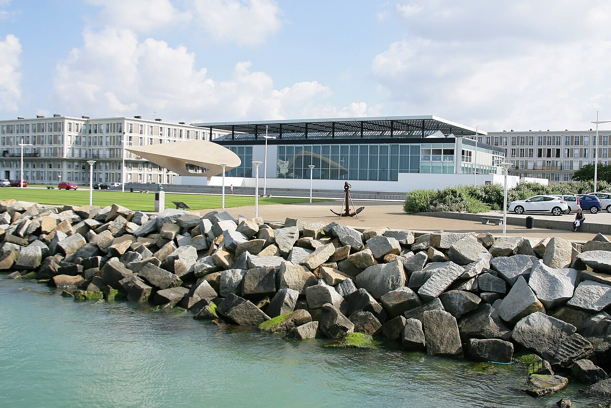
Le MuMa au Havre, vu depuis le front de mer.Photo : Ville du Havre · Wikimedia Commons · CC BY-SA 4.0 · Redimensionnée, sans recadrage. - Normandie
Musée – Manufacture des Parapluies de Cherbourg
Consulter la fiche du musée →
- Normandie
Musée Alfred-Canel
Consulter la fiche du musée →
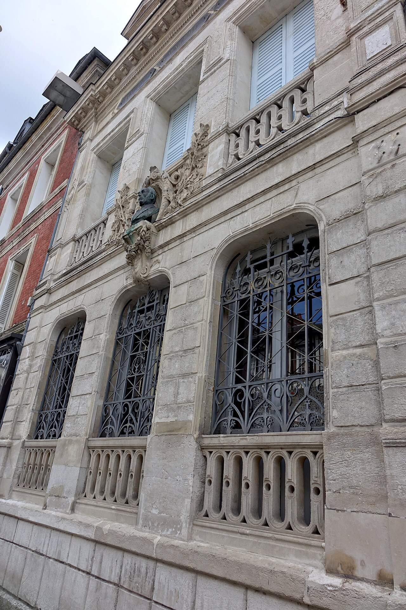
Détail de la façade du musée Alfred-Canel, à Pont-Audemer.Photo : Eponimm · Wikimedia Commons · CC BY-SA 4.0 · Redimensionnée, sans recadrage. - Normandie
Musée Blanche Hoschedé-Monet
Consulter la fiche du musée →
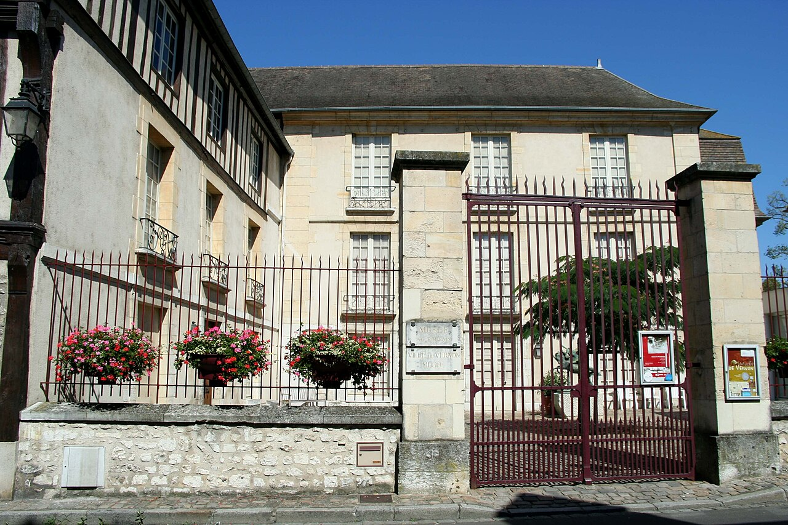
Le bâtiment du musée de Vernon, rue du Pont (vue ancienne).Photo : Spedona · Wikimedia Commons · CC BY-SA 3.0 · Redimensionnée, sans recadrage. - Île-de-France
Musée Bourdelle
Consulter la fiche du musée →

Le jardin sur rue du musée Bourdelle à Paris, photographié en 2009.Photo : Jean-Pierre Dalbéra · Wikimedia Commons · CC BY 2.0 · Redimensionnée, sans recadrage. - Île-de-France
Musée Carnavalet – Histoire de Paris
Consulter la fiche du musée →

Une cour du musée Carnavalet à Paris, photographiée en 2008.Photo : Daderot · Wikimedia Commons · CC BY-SA 4.0 · Redimensionnée, sans recadrage. - Île-de-France
Musée Cernuschi
Consulter la fiche du musée →

La façade du musée Cernuschi à Paris, photographiée en 2008.Photo : Daderot · Wikimedia Commons · Domaine public · Redimensionnée, sans recadrage. - Normandie
Musée Christian Dior
Consulter la fiche du musée →
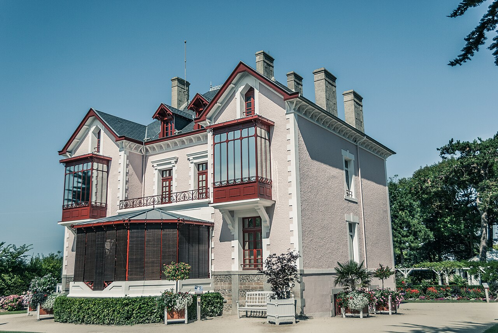
La villa Les Rhumbs, qui abrite le musée Christian Dior à Granville.Photo : SimonCourtecuisse · Wikimedia Commons · CC BY-SA 4.0 · Redimensionnée, sans recadrage. - Hauts-de-France
Musée Condé
Consulter la fiche du musée →

Le château de Chantilly, qui abrite le musée Condé, photographié en 2012.Photo : HALove · Wikimedia Commons · CC BY-SA 3.0 · Redimensionnée, sans recadrage. - Île-de-France
Musée d’Archéologie nationale
Consulter la fiche du musée →

Le château de Saint-Germain-en-Laye, siège du musée d’Archéologie nationale, photographié en 2017.Photo : Patrick · Wikimedia Commons · CC BY-SA 2.0 · Redimensionnée, sans recadrage. - Normandie
Musée d'art et d'histoire Baron Gérard
Consulter la fiche du musée →

L’entrée du musée d’Art et d’Histoire Baron Gérard, à Bayeux.Photo : Andy Li · Wikimedia Commons · CC0 · Redimensionnée, sans recadrage. - Normandie
Musée d’art et d’histoire de Granville
Consulter la fiche du musée →

Le Logis du Roi, siège du musée d’Art et d’Histoire de Granville, photographié en 2012.Photo : HaguardDuNord · Wikimedia Commons · CC BY-SA 3.0 · Redimensionnée, sans recadrage. - Normandie
Musée d'art et d'histoire de Lisieux
Consulter la fiche du musée →

La maison à pans de bois du musée d’Art et d’Histoire de Lisieux.Photo : Chatsam · Wikimedia Commons · CC BY-SA 3.0 · Redimensionnée, sans recadrage. - Normandie
Musée d'art et d'histoire de Saint-Lô
Consulter la fiche du musée →

Une salle de peintures anciennes du musée d’Art et d’Histoire de Saint-Lô, photographiée en 2026.Photo : Peccadille · Wikimedia Commons · CC BY-SA 3.0 · Redimensionnée, sans recadrage. - Île-de-France
Musée d’Art Moderne de Paris
Consulter la fiche du musée →

Détail des sculptures et des abords du musée d’Art moderne de Paris, photographié en 2006.Photo : Maciej Zgadzaj · Wikimedia Commons · CC BY 2.0 · Redimensionnée, sans recadrage. - Normandie
Musée d'art moderne Richard Anacréon
Consulter la fiche du musée →
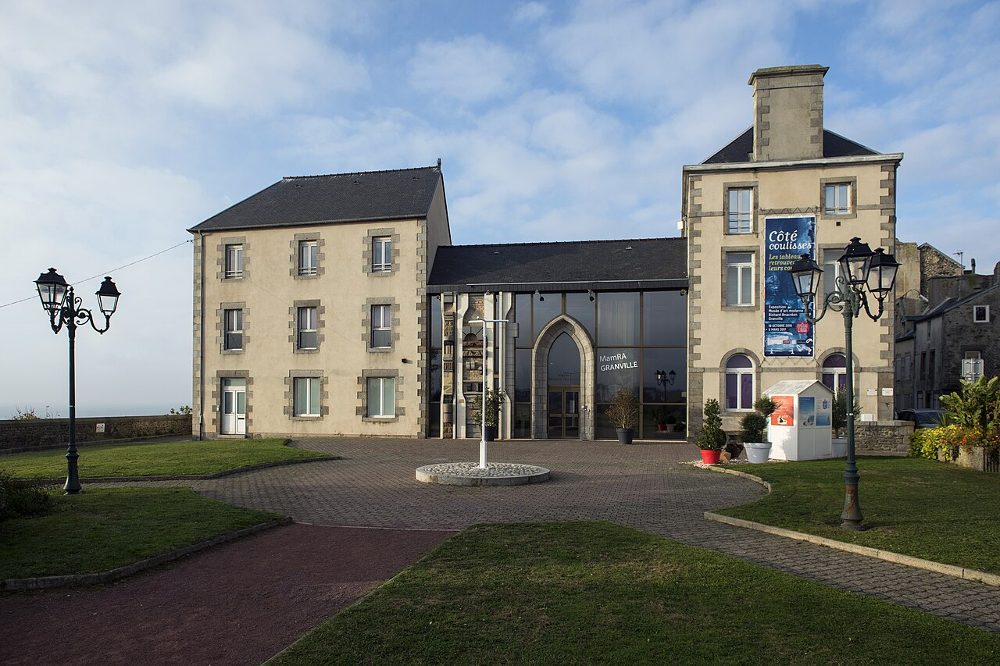
Le musée d’Art moderne Richard Anacréon à Granville.Photo : Selbymay · Wikimedia Commons · CC BY-SA 4.0 · Redimensionnée, sans recadrage. - Normandie
Musée d’Art, Histoire et Archéologie d’Évreux
Consulter la fiche du musée →
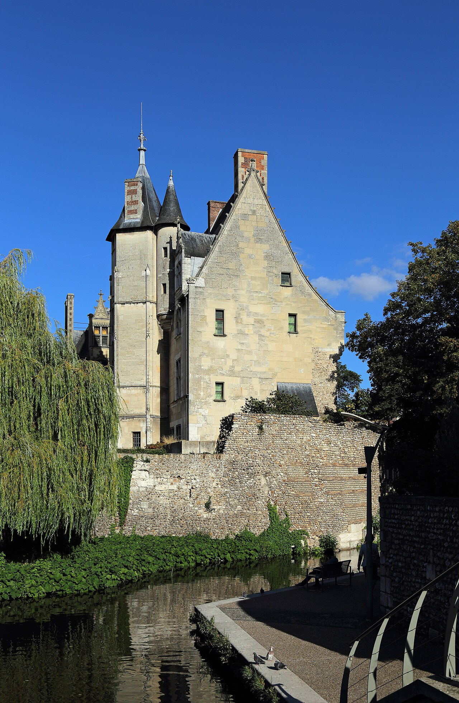
L’ancien palais épiscopal d’Évreux, qui abrite le musée.Photo : Marc Ryckaert · Wikimedia Commons · CC BY-SA 4.0 · Redimensionnée, sans recadrage. - Normandie
Musée d’ethnographie et d’art populaire de Honfleur
Consulter la fiche du musée →

La façade du musée d’Ethnographie à Honfleur, photographiée en 2019.Photo : Miniwark · Wikimedia Commons · CC BY-SA 4.0 · Redimensionnée, sans recadrage. - Normandie
Musée d’Histoire de la Vie Quotidienne
Consulter la fiche du musée →

Le musée d’Histoire de la vie quotidienne à Saint-Martin-en-Campagne, photographié en 2017.Photo : Marc Ryckaert · Wikimedia Commons · CC BY-SA 4.0 · Redimensionnée, sans recadrage. - Île-de-France
Musée d’Orsay
Consulter la fiche du musée →

L’horloge de la façade du musée d’Orsay.Photo : Cheng-en Cheng · Wikimedia Commons · CC BY-SA 2.0 · Redimensionnée, sans recadrage. - Hauts-de-France
Musée de Flandre
Consulter la fiche du musée →

L’hôtel de la Noble Cour, siège du musée de Flandre à Cassel, photographié en 2012.Photo : Velvet · Wikimedia Commons · CC BY-SA 3.0 · Redimensionnée, sans recadrage. - Auvergne-Rhône-Alpes
Musée de Grenoble
Consulter la fiche du musée →
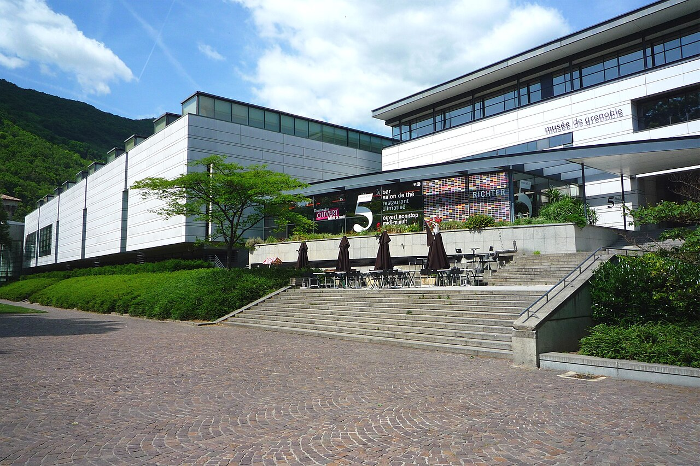
Le musée de Grenoble, photographié en 2009.Photo : Milky · Wikimedia Commons · CC BY-SA 3.0 · Redimensionnée, sans recadrage. - Île-de-France
Musée de l’Air et de l’Espace
Consulter la fiche du musée →

Le hall d’accueil de l’ancienne aérogare du musée de l’Air et de l’Espace, photographié en 2022.Photo : DiscoA340 · Wikimedia Commons · CC BY-SA 4.0 · Redimensionnée, sans recadrage. - Normandie
Musée de l’Écorché d’Anatomie
Consulter la fiche du musée →
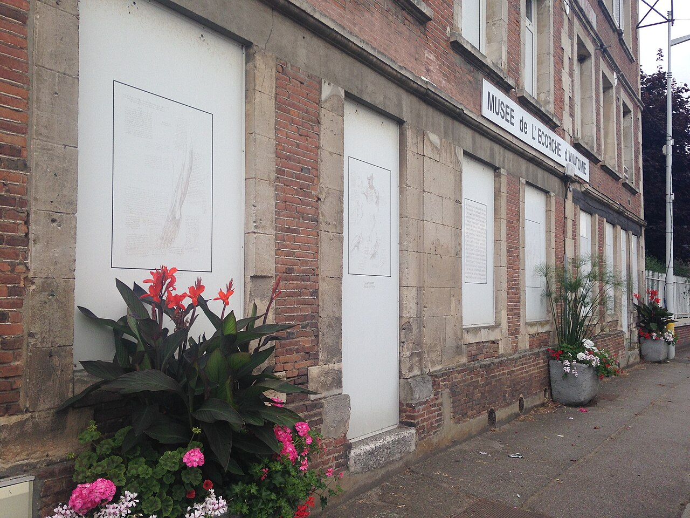
Le musée de l’Écorché d’anatomie au Neubourg, photographié en 2016.Photo : Eponimm · Wikimedia Commons · CC BY-SA 4.0 · Redimensionnée, sans recadrage. - Île-de-France
Musée de l’Homme
Consulter la fiche du musée →

Une salle du musée de l’Homme à Paris, photographiée en 2024.Photo : Frédéric Picard 28 · Wikimedia Commons · CC BY-SA 4.0 · Redimensionnée, sans recadrage. - Normandie
Musée de l’Horlogerie
Consulter la fiche du musée →
- Normandie
Musée de la Bataille de Tilly-sur-Seulles
Consulter la fiche du musée →

La chapelle Notre-Dame-du-Val, qui abrite le musée de la Bataille de Tilly-sur-Seulles, photographiée en 2015.Photo : Ikmo-ned · Wikimedia Commons · CC BY-SA 4.0 · Redimensionnée, sans recadrage. - Normandie
Musée de la Batterie de Merville
Consulter la fiche du musée →

L’entrée de la casemate no 1 de la batterie de Merville, photographiée en 2025.Photo : Dave osm · Wikimedia Commons · CC BY-SA 4.0 · Redimensionnée, sans recadrage. - Normandie
Musée de la céramique – Centre de création
Consulter la fiche du musée →

Un espace extérieur abrité du musée de la céramique de Ger, photographié en 2016.Photo : MAIRIE DE GER · Wikimedia Commons · CC BY-SA 4.0 · Redimensionnée, sans recadrage. - Normandie
Musée de la Céramique de Rouen
Consulter la fiche du musée →
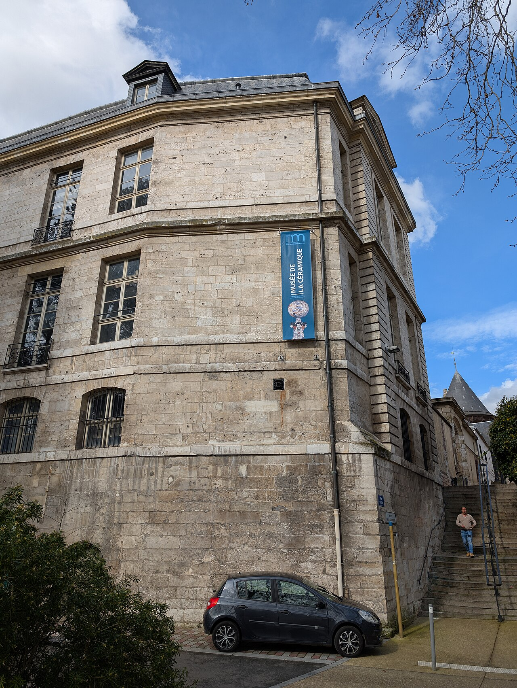
Le musée de la Céramique dans l’hôtel d’Hocqueville, à Rouen.Photo : Andy Li · Wikimedia Commons · CC0 · Redimensionnée, sans recadrage. - Normandie
Musée de la Comtesse de Ségur
Consulter la fiche du musée →
- Normandie
Musée de la Corderie Vallois
Consulter la fiche du musée →

Le bâtiment de la Corderie Vallois à Notre-Dame-de-Bondeville.Photo : Odenel · Wikimedia Commons · CC BY-SA 3.0 · Redimensionnée, sans recadrage. - Normandie
Musée de la Forge
Consulter la fiche du musée →
- Île-de-France
Musée de la Grande Guerre
Consulter la fiche du musée →

Vue partielle du bâtiment du musée de la Grande Guerre à Meaux, photographiée en 2011.Photo : Prosopee · Wikimedia Commons · CC BY-SA 3.0 · Redimensionnée, sans recadrage. - Normandie
Musée de la Grosse Forge d’Aube
Consulter la fiche du musée →
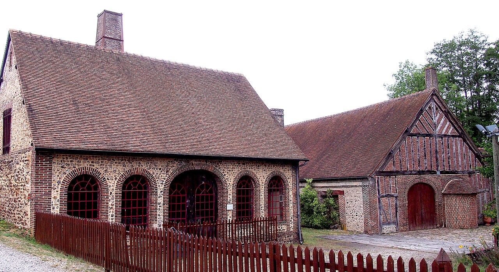
Le site de la Grosse Forge à Aube, photographié en 2019.Photo : Ikmo-ned · Wikimedia Commons · CC BY-SA 4.0 · Redimensionnée, sans recadrage. - Normandie
Musée de la Libération de Cherbourg
Consulter la fiche du musée →

L’entrée du musée de la Libération au fort du Roule à Cherbourg, photographiée en 2019.Photo : Xfigpower · Wikimedia Commons · CC BY-SA 3.0 · Redimensionnée, sans recadrage. - Normandie
Musée de la Marine de Honfleur
Consulter la fiche du musée →

L’ancienne église Saint-Étienne, qui abrite le musée de la Marine à Honfleur.Photo : Richard N Horne · Wikimedia Commons · CC BY 4.0 · Redimensionnée, sans recadrage. - Normandie
Musée de la Meunerie – Moulin de Marcy
Consulter la fiche du musée →
- Normandie
Musée de la Mine du Molay-Littry
Consulter la fiche du musée →

Le musée de la mine du Molay-Littry et la cheminée de la fosse Frandemiche, photographiés en 2016.Photo : A.BourgeoisP · Wikimedia Commons · CC BY-SA 4.0 · Redimensionnée, sans recadrage. - Normandie
Musée de la Percée du Bocage
Consulter la fiche du musée →
- Normandie
Musée de la Poëslerie
Consulter la fiche du musée →
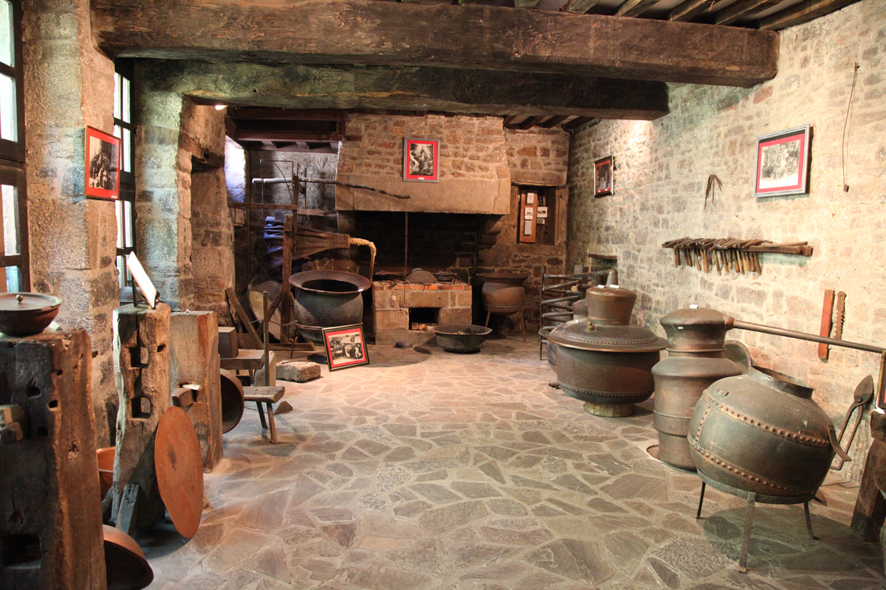
Un atelier du musée de la Poëslerie à Villedieu-les-Poêles, photographié en 2010.Photo : P.Clairay · Wikimanche · CC BY-SA 3.0 · Redimensionnée, sans recadrage. - Normandie
Musée de la Tapisserie de Bayeux
Consulter la fiche du musée →

Le portail du musée de la Tapisserie de Bayeux, photographié en 2017.Photo : Avi1111 dr. avishai teicher · Wikimedia Commons · CC BY-SA 4.0 · Redimensionnée, sans recadrage. - Normandie
Musée de Normandie
Consulter la fiche du musée →

Le logis des Gouverneurs, qui abrite le musée de Normandie à Caen.Photo : Karldupart · Wikimedia Commons · CC BY-SA 4.0 · Redimensionnée, sans recadrage. - Hauts-de-France
Musée de Picardie
Consulter la fiche du musée →
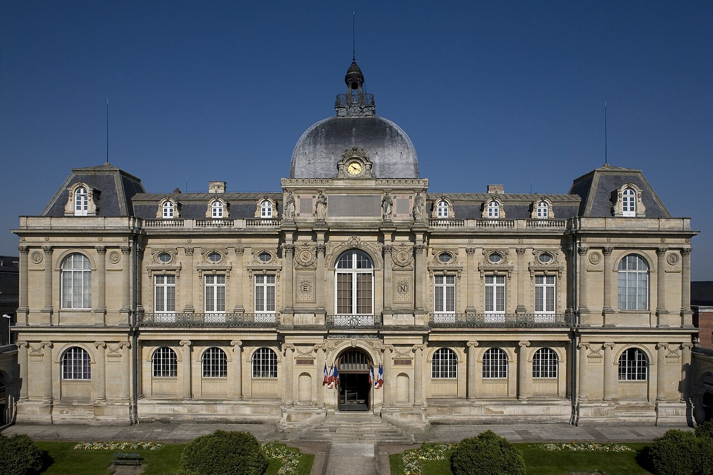
La façade du musée de Picardie à Amiens, photographiée en 2008.Photo : T.Rambeau · Wikimedia Commons · CC BY-SA 4.0 · Redimensionnée, sans recadrage. - Normandie
Musée de Vire Normandie
Consulter la fiche du musée →

La façade du musée de Vire Normandie et son jardin.Photo : Musee vire · Wikimedia Commons · CC BY-SA 4.0 · Redimensionnée, sans recadrage. - Hauts-de-France
Musée départemental Henri Matisse
Consulter la fiche du musée →
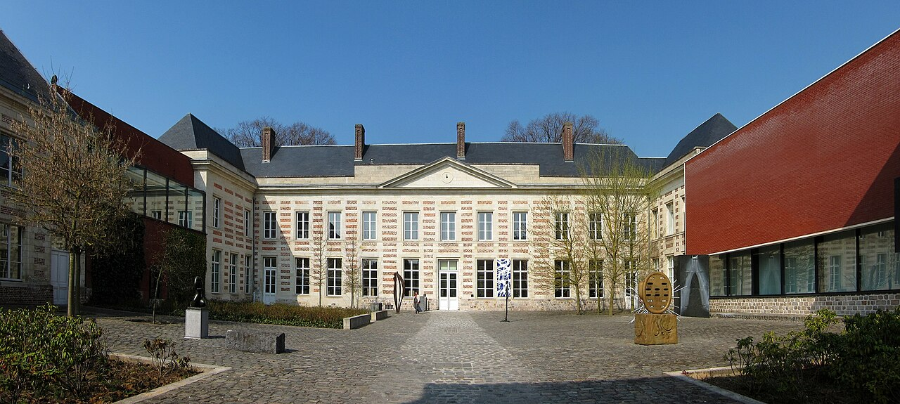
La cour du musée Matisse au Cateau-Cambrésis, photographiée en 2012.Photo : Velvet · Wikimedia Commons · CC BY-SA 3.0 · Redimensionnée, sans recadrage. - Normandie
Musée des Antiquités de Rouen
Consulter la fiche du musée →

L’ancien couvent de la Visitation, siège du musée des Antiquités à Rouen (vue ancienne).Photo : Giogo · Wikimedia Commons · CC BY-SA 3.0 · Redimensionnée, sans recadrage. - Île-de-France
Musée des Arts Décoratifs
Consulter la fiche du musée →

Le hall du musée des Arts décoratifs à Paris, photographié en 2011.Photo : Telemaque MySon · Wikimedia Commons · CC BY-SA 3.0 · Redimensionnée, sans recadrage. - Normandie
Musée des Automates de Falaise
Consulter la fiche du musée →

Une scène d’automates du musée de Falaise, photographiée en 2016.Photo : Philippe Alès · Wikimedia Commons · CC BY-SA 4.0 · Redimensionnée, sans recadrage. - Normandie
Musée des Automates de Falaise
Consulter la fiche du musée →
Une scène d’automates du musée de Falaise, photographiée en 2016.Photo : Philippe Alès · Wikimedia Commons · CC BY-SA 4.0 · Redimensionnée, sans recadrage. - Normandie
Musée des Beaux-Arts de Bernay
Consulter la fiche du musée →
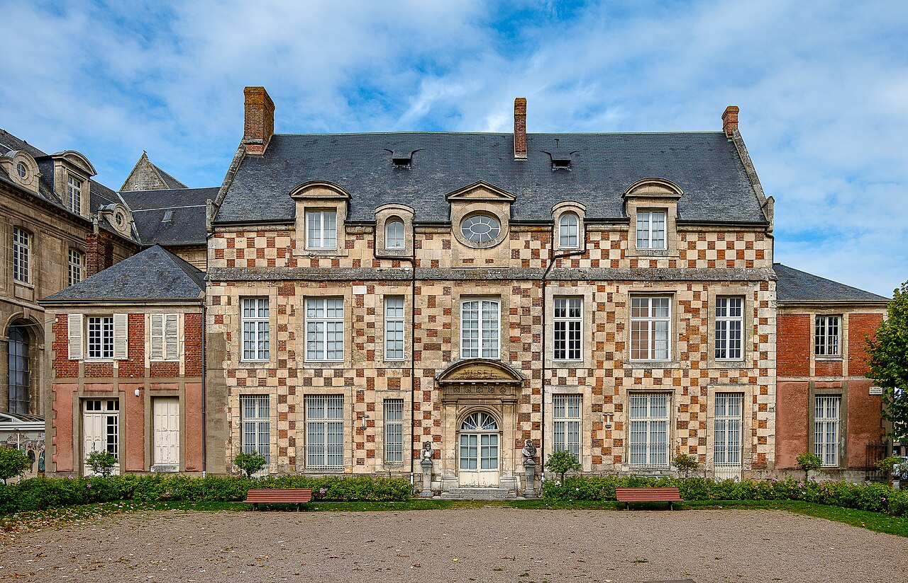
Le musée des Beaux-Arts de Bernay dans le logis abbatial.Photo : Rolf Kranz · Wikimedia Commons · CC BY-SA 4.0 · Redimensionnée, sans recadrage. - Normandie
Musée des Beaux-Arts de Caen
Consulter la fiche du musée →

L’entrée du musée des Beaux-Arts de Caen, dans l’enceinte du château.Photo : Andy Li · Wikimedia Commons · CC0 · Redimensionnée, sans recadrage. - Normandie
Musée des Beaux-Arts de Rouen
Consulter la fiche du musée →
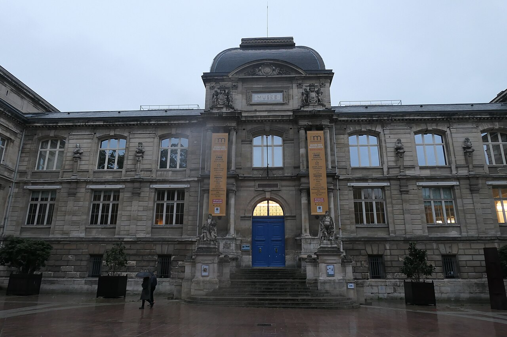
La façade occidentale du musée des Beaux-Arts de Rouen.Photo : Fab5669 · Wikimedia Commons · CC BY-SA 4.0 · Redimensionnée, sans recadrage. - Normandie
Musée des Beaux-Arts et de la Dentelle
Consulter la fiche du musée →
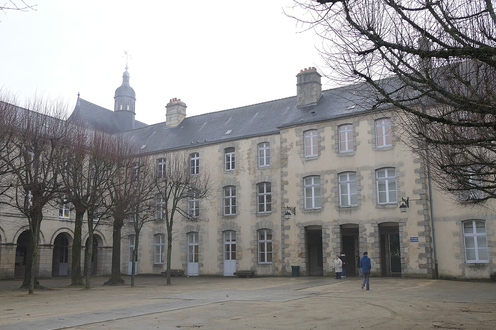
L’ancien collège des Jésuites, qui abrite le musée des Beaux-Arts et de la Dentelle d’Alençon.Photo : © Peter Potrowl · Wikimedia Commons · CC BY-SA 4.0 · Redimensionnée, sans recadrage. - Auvergne-Rhône-Alpes
Musée des Confluences
Consulter la fiche du musée →

Le musée des Confluences vu depuis le Rhône, à Lyon.Photo : Ronavni · Wikimedia Commons · CC BY-SA 4.0 · Redimensionnée, sans recadrage. - Normandie
Musée des impressionnismes Giverny
Consulter la fiche du musée →
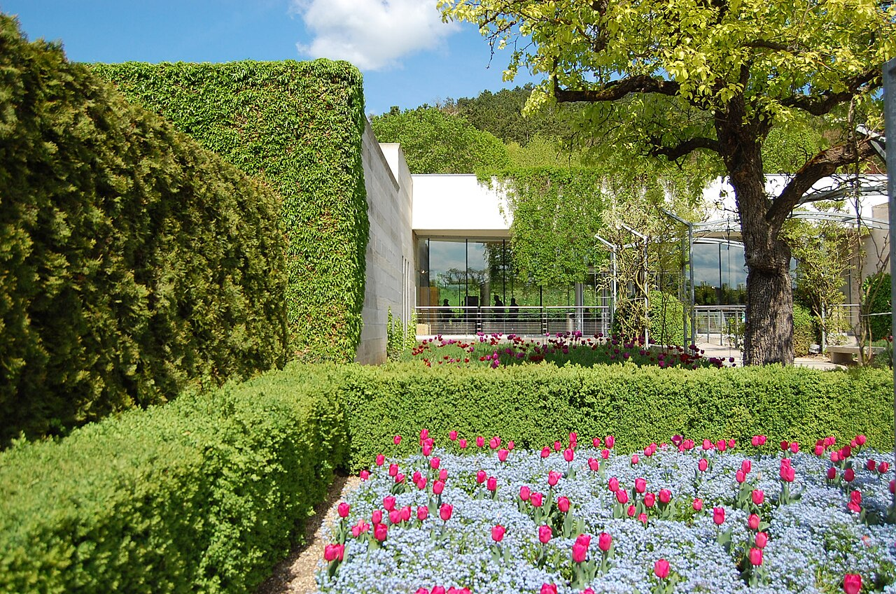
Le musée des impressionnismes Giverny et son jardin, photographiés en 2011.Photo : Mdig · Wikimedia Commons · CC BY-SA 4.0 · Redimensionnée, sans recadrage. - Normandie
Musée des instruments à vent
Consulter la fiche du musée →
- Normandie
Musée des instruments à vent
Consulter la fiche du musée →
- Normandie
Musée des Sapeurs-Pompiers de France
Consulter la fiche du musée →

Le musée des Sapeurs-Pompiers de France à Montville, photographié en 2022.Photo : Pradigue · Wikimedia Commons · CC BY-SA 4.0 · Redimensionnée, sans recadrage. - Normandie
Musée des Traditions et Arts Normands – Château de Martainville
Consulter la fiche du musée →

Le château de Martainville, qui abrite le musée des Traditions et Arts normands.Photo : Giogo · Wikimedia Commons · CC BY-SA 3.0 · Redimensionnée, sans recadrage. - Normandie
Musée du Bocage normand
Consulter la fiche du musée →

La ferme de Boisjugan, siège du musée du Bocage normand, photographiée en 2006.Photo : Xfigpower · Wikimedia Commons · CC BY-SA 3.0 · Redimensionnée, sans recadrage. - Normandie
Musée du Camembert
Consulter la fiche du musée →
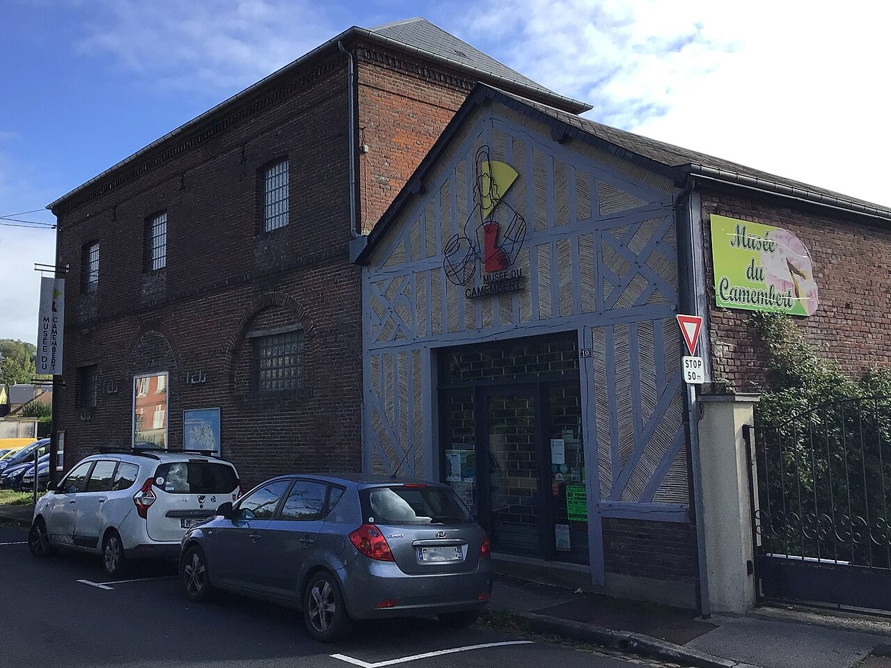
Le musée du Camembert à Vimoutiers, photographié en 2023.Photo : Zandcee · Wikimedia Commons · CC BY-SA 4.0 · Redimensionnée, sans recadrage. - Normandie
Musée du château de Flers
Consulter la fiche du musée →
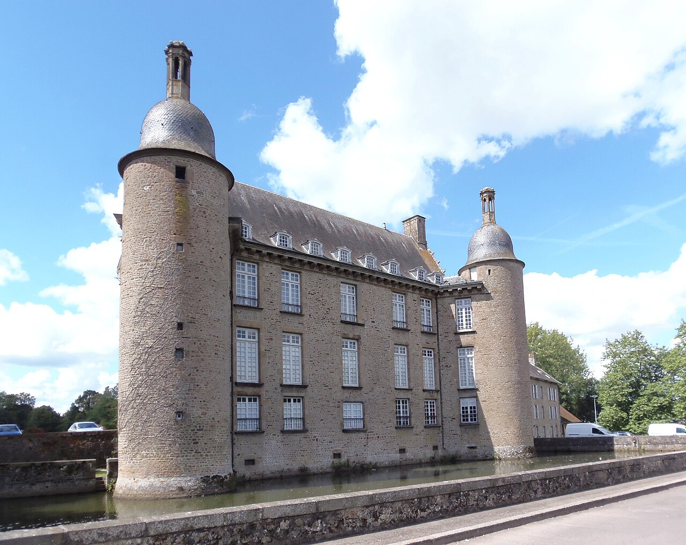
La façade est du château de Flers, qui abrite le musée.Photo : Ikmo-ned · Wikimedia Commons · CC BY-SA 4.0 · Redimensionnée, sans recadrage. - Normandie
Musée du Débarquement
Consulter la fiche du musée →

La façade vitrée du musée du Débarquement à Arromanches, photographiée en 2026.Photo : jokinzuru (Tagzania user ID: 778) · Wikimedia Commons · CC BY-SA 4.0 · Redimensionnée, sans recadrage. - Normandie
Musée du Débarquement Utah Beach
Consulter la fiche du musée →

Le musée du Débarquement d’Utah Beach et ses abords, photographiés en 2009.Photo : Hansm · Wikimedia Commons · CC BY-SA 3.0 · Redimensionnée, sans recadrage. - Normandie
Musée du Jouet de La Ferté-Macé
Consulter la fiche du musée →
- Île-de-France
Musée du Louvre
Consulter la fiche du musée →

Le Louvre — pavillon de Rohan.Photo : Guilhem Vellut · Wikimedia Commons · CC BY 2.0 · Redimensionnée, sans recadrage. - Normandie
Musée du mobilier miniature – Château de Vendeuvre
Consulter la fiche du musée →
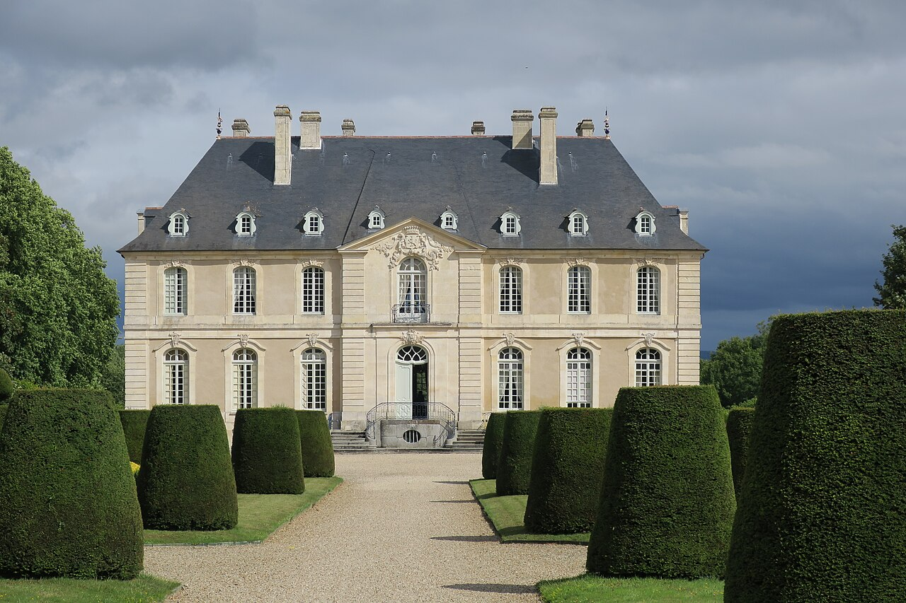
Le château de Vendeuvre, domaine qui accueille le musée du Mobilier miniature.Photo : 13okouran · Wikimedia Commons · CC BY-SA 4.0 · Redimensionnée, sans recadrage. - Normandie
Musée du N°4 Commando franco-britannique
Consulter la fiche du musée →
- Normandie
Musée du Prieuré
Consulter la fiche du musée →

Le musée du Prieuré à Harfleur.Photo : VIGNERON · Wikimedia Commons · CC BY-SA 3.0 · Redimensionnée, sans recadrage. - Normandie
Musée du Sabot
Consulter la fiche du musée →
- Normandie
Musée du Verre de la Vallée de la Bresle
Consulter la fiche du musée →

Le manoir de Fontaine, qui abrite le musée du Verre à Blangy-sur-Bresle.Photo : Laifen · Wikimedia Commons · CC BY-SA 3.0 · Redimensionnée, sans recadrage. - Normandie
Musée du Verre François Décorchemont
Consulter la fiche du musée →
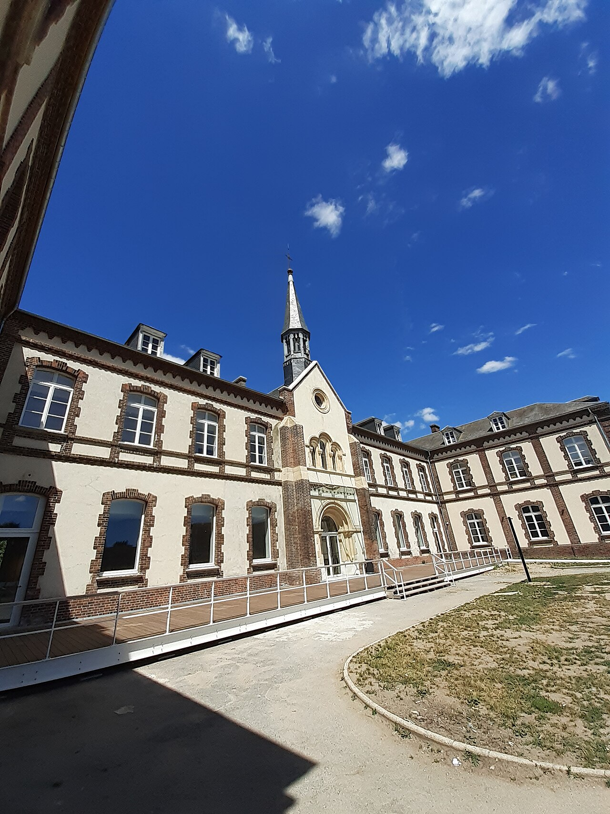
Le musée du Verre François-Décorchemont à Conches-en-Ouche, photographié en 2022.Photo : Totorvdr59 · Wikimedia Commons · CC BY-SA 4.0 · Redimensionnée, sans recadrage. - Normandie
Musée Eugène-Boudin
Consulter la fiche du musée →

Une salle du musée Eugène-Boudin à Honfleur, photographiée en 2024.Photo : Derbrauni · Wikimedia Commons · CC BY 4.0 · Redimensionnée, sans recadrage. - Occitanie
Musée Fabre
Consulter la fiche du musée →
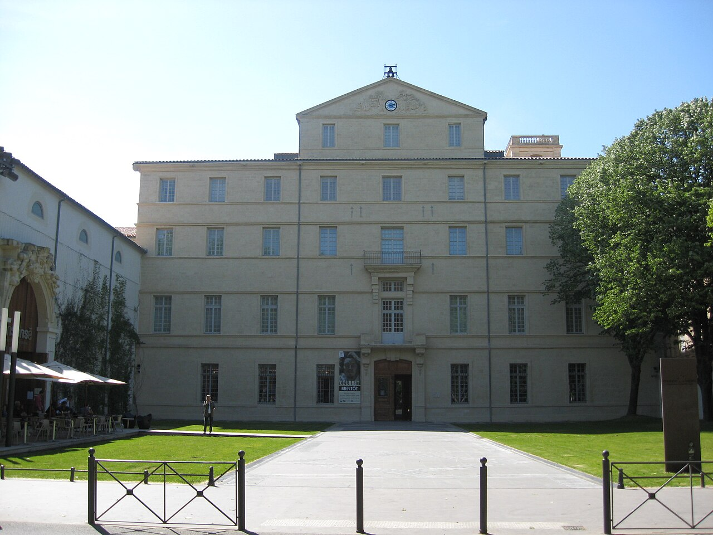
La façade du musée Fabre, à Montpellier.Photo : Jean-Marie DAVID (Dinkley) · Wikimedia Commons · CC BY-SA 3.0 · Redimensionnée, sans recadrage. - Normandie
Musée Fernand Léger – André Mare
Consulter la fiche du musée →

Le musée Fernand-Léger – André-Mare à Argentan, photographié en 2019.Photo : Madeleine Marguerite · Wikimedia Commons · CC BY-SA 4.0 · Redimensionnée, sans recadrage. - Provence-Alpes-Côte d’Azur
Musée Granet
Consulter la fiche du musée →
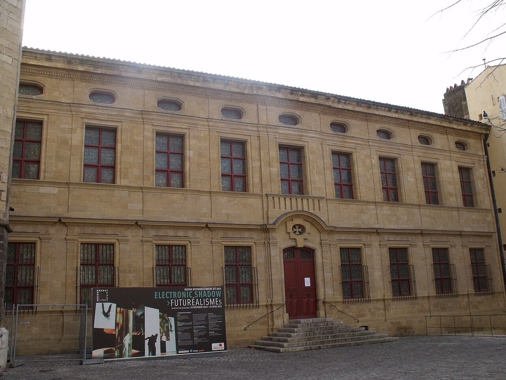
La façade du musée Granet à Aix-en-Provence (vue ancienne).Photo : Malost · Wikimedia Commons · CC BY-SA 3.0 · Redimensionnée, sans recadrage. - Île-de-France
Musée Grévin
Consulter la fiche du musée →

L’entrée du musée Grévin à Paris, photographiée en 2009.Photo : Myrabella · Wikimedia Commons · CC BY-SA 3.0 · Redimensionnée, sans recadrage. - Normandie
Musée Le Secq des Tournelles
Consulter la fiche du musée →

Une vue intérieure du musée Le Secq des Tournelles à Rouen, photographiée en 2010.Photo : Touf · Wikimedia Commons · CC BY-SA 3.0 · Redimensionnée, sans recadrage. - Normandie
Musée maritime de l'île Tatihou
Consulter la fiche du musée →

Une reconstitution de quille de frégate photographiée au musée maritime de Tatihou en 2011.Photo : Raphodon · Wikimedia Commons · CC BY-SA 3.0 · Redimensionnée, sans recadrage. - Normandie
Musée maritime de Regnéville-sur-Mer
Consulter la fiche du musée →

Les fours à chaux du Rey à Regnéville-sur-Mer, photographiés en 2016.Photo : Selbymay · Wikimedia Commons · CC BY-SA 4.0 · Redimensionnée, sans recadrage. - Normandie
Musée Mémorial de la Bataille de Normandie
Consulter la fiche du musée →

Un véhicule exposé au musée-mémorial de la Bataille de Normandie, photographié en 2021.Photo : Chabe01 · Wikimedia Commons · CC BY-SA 4.0 · Redimensionnée, sans recadrage. - Normandie
Musée municipal des Ivoires
Consulter la fiche du musée →
- Normandie
Musée Nicolas Poussin
Consulter la fiche du musée →

Le bâtiment à pans de bois du musée Nicolas-Poussin aux Andelys.Photo : Chatsam · Wikimedia Commons · CC BY-SA 3.0 · Redimensionnée, sans recadrage. - Normandie
Musée Quesnel-Morinière
Consulter la fiche du musée →

Le musée Quesnel-Morinière à Coutances.Photo : HaguardDuNord · Wikimedia Commons · CC BY-SA 3.0 · Redimensionnée, sans recadrage. - Normandie
Musée régional du Cidre et du Calvados
Consulter la fiche du musée →

La Maison du Grand Quartier, siège du musée régional du Cidre à Valognes, photographiée en 2011.Photo : Xfigpower · Wikimedia Commons · CC BY-SA 3.0 · Redimensionnée, sans recadrage. - Normandie
Musée Thomas Henry
Consulter la fiche du musée →

La salle Jean-François Millet du musée Thomas-Henry, photographiée en 2016.Photo : Albanebx · Wikimedia Commons · CC BY-SA 4.0 · Redimensionnée, sans recadrage. - Normandie
Musée Villa Montebello
Consulter la fiche du musée →

La façade sud-ouest de la villa Montebello, à Trouville-sur-Mer.Photo : Pymouss · Wikimedia Commons · CC BY-SA 3.0 · Redimensionnée, sans recadrage. - Normandie
Muséum Emmanuel-Liais
Consulter la fiche du musée →

Le parc et les bâtiments du domaine Emmanuel-Liais à Cherbourg, photographiés en 2015.Photo : JMEnault_Ville de Cherbourg-en-Cotentin · Wikimedia Commons · CC BY-SA 4.0 · Redimensionnée, sans recadrage. - Hauts-de-France
Palais des Beaux-Arts de Lille
Consulter la fiche du musée →

La façade du Palais des Beaux-Arts de Lille.Photo : Peter Potrowl · Wikimedia Commons · CC BY 3.0 · Redimensionnée, sans recadrage. - Île-de-France
Palais Galliera – Musée de la Mode de Paris
Consulter la fiche du musée →

La façade sud du Palais Galliera et son square, photographiés en 2023.Photo : Romainbehar · Wikimedia Commons · CC0 · Redimensionnée, sans recadrage. - Normandie
Paléospace
Consulter la fiche du musée →

Une salle du Paléospace à Villers-sur-Mer, photographiée en 2024.Photo : DimiTalen · Wikimedia Commons · CC0 · Redimensionnée, sans recadrage. - Normandie
Parc-musée du Granit
Consulter la fiche du musée →

Le parcours extérieur du parc-musée du Granit à Saint-Michel-de-Montjoie, en 2008.Photo : DSMD · Wikimedia Commons · Domaine public · Redimensionnée, sans recadrage. - Île-de-France
Petit Palais – Musée des Beaux-Arts de la Ville de Paris
Consulter la fiche du musée →

La façade du Petit Palais, à Paris.Photo : KoS · Wikimedia Commons · CC BY-SA 3.0 · Redimensionnée, sans recadrage. - Normandie
Scriptorial d'Avranches — musée des manuscrits du Mont-Saint-Michel
Consulter la fiche du musée →

Le bâtiment du Scriptorial à Avranches, photographié en 2010.Photo : Man vyi · Wikimedia Commons · Domaine public · Redimensionnée, sans recadrage. - Normandie
Station Radar 44 – Musée franco-allemand du Radar
Consulter la fiche du musée →

Un radar SCR-584 photographié au musée du Radar à Douvres-la-Délivrande en 2016.Photo : Ikmo-ned · Wikimedia Commons · CC BY-SA 4.0 · Redimensionnée, sans recadrage. - Normandie
Vieux-la-Romaine, musée et sites archéologiques
Consulter la fiche du musée →

Le musée de Vieux-la-Romaine, photographié en 2009.Photo : Pascal Radigue · Wikimedia Commons · CC BY 3.0 · Redimensionnée, sans recadrage.
.jpg){kind=link}
.jpg){kind=link}


.jpg){kind=link}

.JPG){kind=link}


.JPG){kind=link}


.jpg){kind=link}


_-_Mus%C3%A9e_d%27arch%C3%A9ologie_nationale_-_48270309896.jpg){kind=link}


_in_Honfleur,_France,_now_the_Maritime_Museum.jpg){kind=link}


.jpg){kind=link}


_-_2021-11-11_-_11.jpg){kind=link}


.jpg){kind=link}